We Are On It
Taller de Desarrollo y
Gestión de Aplicaciones
Construyendo el Futuro de We Are On It con Inteligencia Agéntica
¿Por dónde empezamos?
Selecciona la sección del taller a la que deseas ir:
Construir Presentaciones de forma Profesional
- Borrador de oferta laboral transformado en presentación profesional con Antigravity.
- Diseño automatizado: Tipografía, paleta de colores, estructura y animaciones generadas por IA.
- Resultado: Una presentación lista para producción, desplegada en minutos con cero código manual.

OnIT Protocolos
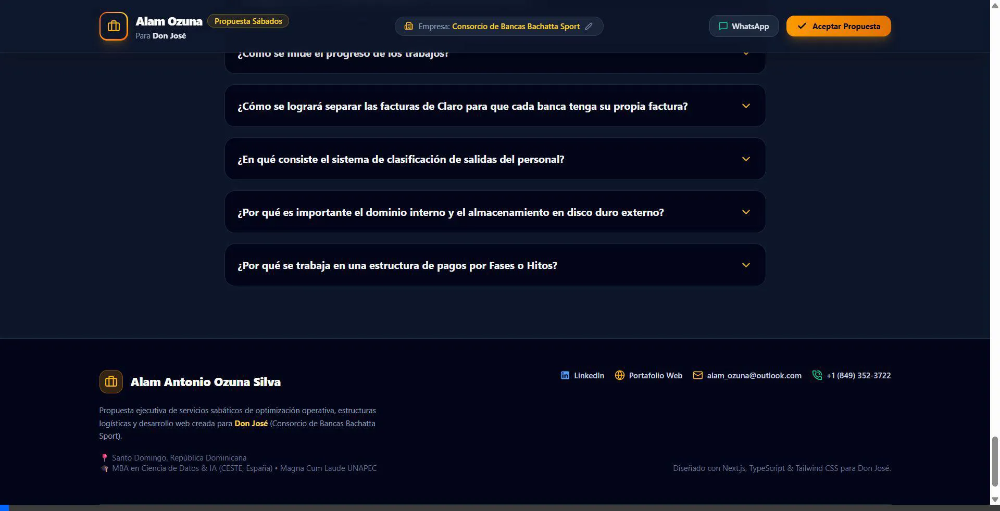
- Centralizador operativo con 19 agencias de property management.
- Filtrado por ciudades (Barcelona cuenta con 6 agencias activas).
- Agencias Activas: Guestfy, Home Club, LOCA, SH Barcelona, Stay Unique, Sweet.
- Unifica procedimientos complejos: limpieza, lavandería, check-in y reformas.
¿Qué es Google Antigravity 2.0?
Plataforma Standalone
App de escritorio nativa e independiente (macOS/Windows). No es una simple extensión, es un centro de mando autónomo integral.
Velocidad Gemini 3.5
Impulsado por Gemini 3.5 Flash procesando 289 tokens/segundo. Reduce la latencia a milisegundos en tareas altamente complejas.
Seguridad Estricta
Review-Driven Development (estándar We Are On It). El agente solicita aprobación humana antes de modificar archivos críticos.
Arquitectura Subyacente
Orquestación Multiagente
El agente principal delega subtareas. Trabajan en paralelo auditando o actualizando protocolos de LOCA y Guestfy simultáneamente.

Servidor MCP (Model Context Protocol)
El "Puerto USB" de la IA. Conecta de forma segura a los modelos con fuentes de datos externas, como nuestros repositorios de GitHub.
La Bóveda Digital: GitHub
GitHub
The Vault
¿Qué es?
Nuestra bóveda de seguridad en la nube donde reside el código de hospitalidad de We Are On It.
Historial de Versiones
Es nuestro seguro de vida digital. Cada cambio queda registrado; siempre podemos regresar a un estado anterior si algo falla.
Colaboración Dinámica
Permite que múltiples humanos y agentes colaboren en el mismo proyecto simultáneamente sin sobrescribir el trabajo del otro.
El Publicador Instantáneo: Vercel
GitHub
El Código / The Vault
Vercel
Motor de Construcción
App en Vivo
Experiencia del Huésped
Servidor MCP (Model Context Protocol)
USB Hub
Antigravity 2.0
Internas
Externas
¿Qué es un Servidor MCP?
Es la arquitectura cliente-servidor estándar que permite a la IA conectarse de forma segura con el mundo exterior.
Las 3 Primitivas del MCP
- 1. Recursos: Datos estructurados que el agente puede leer (ej. manuales de operaciones).
- 2. Herramientas: Funciones ejecutables que el agente puede usar (ej. consultar disponibilidad).
- 3. Prompts: Patrones de interacción reutilizables.
Descargar Antigravity 2.0
- Abre tu navegador web de preferencia.
- Navega a la URL oficial: antigravity.google/download#antigravity-2
- Selecciona tu sistema operativo (Windows
.exe, macOS.dmg, o Linux). - Descarga el instalador y sigue el asistente de instalación.
- Una vez instalado, abre la aplicación e inicia sesión con tu cuenta de Google asociada a We Are On It (ej:
admin@weareonit.io).
Configuración Avanzada: Permisos y Workspaces
Permisos de Agente (Autonomous Mode)
Para que el agente no pregunte tanto y trabaje fluido:
- Ve a Settings (⚙️) → Security & Permissions.
- Command Execution: Selecciona "Auto-approve all commands".
- File System: Selecciona "Allow all".
- Network Access: Permite acceso a
github.comyvercel.com. - Activa "Autonomous Mode" (desactiva confirmación en cada edición).
Manejo de Workspaces
Cómo aislar el contexto de cada proyecto:
- Un Workspace (Espacio de trabajo) le dice a Antigravity qué carpeta es su límite de visión.
- Debes agregar la carpeta donde descargaste los repositorios (ej:
/Documentos/ContactCenterApp). - De esta forma, el agente lee y entiende todo el contexto de ese proyecto sin mezclarse con otros sistemas.
Paso 1: Acceder a la Web Oficial
- Ingresa a la URL oficial de descarga: antigravity.google/download#antigravity-2
- Verifica que te encuentres en la sección de la versión 2.0.
- Haz clic en el botón principal Download for Windows (o tu sistema operativo).

Paso 2: Elegir Arquitectura y Sistema
- Confirma la versión Antigravity 2.0 (v2.6.0).
- Selecciona el instalador según tu plataforma: macOS, Windows o Linux.
- Elige la arquitectura adecuada: x64 (estándar) o ARM64.

Paso 3: Inicio de Sesión Corporativo
- Abre la aplicación Google Antigravity recién instalada.
- En la pantalla de bienvenida, presiona Continue with Google.
- Inicia sesión con tu cuenta corporativa autorizada (
admin@weareonit.io).

Paso 4: Aviso de Seguridad y Datos
- Revisa la notificación de Security Notice & Data Use.
- Entiende los límites y prácticas recomendadas de los agentes IA.
- Marca la casilla de acuerdo de términos y presiona Next.

Paso 5: Selección de Tema
- Elige la apariencia visual de la interfaz de Antigravity.
- Opciones disponibles: System, Light o Dark.
- Recomendado: Dark o System para trabajar con código cómodamente.

Paso 6: Integraciones y Plugins (Build with Google)
- Selecciona los paquetes iniciales de herramientas e integración.
- Recomendados: Modern Web Guidance, Chrome DevTools y Google Antigravity SDK.
- Presiona Finish para completar el asistente inicial.

Paso 7: Entorno de Trabajo y Modelo
- Visualiza la pantalla principal del agente con el menú de navegación.
- Verifica el modelo seleccionado: Gemini 3.6 Flash High.
- Accede al panel de configuración a través del ícono de Settings ⚙️.

Paso 8: Ajustes Generales y Agente
- En Settings ⚙️ → General, configura la ejecución del agente.
- Ajusta Queued Messages (Send Immediately / Queue).
- Define la política de revisión en Artifact Review Policy.

Paso 9: Permisos de Archivos, Red y MCP
- Configura las rutas permitidas en File Access Rules.
- Habilita las URLs en Network Access Rules.
- Activa los permisos para Terminal Commands y MCP Tools.

Configurar MCP de GitHub (Cuenta Admin)
- Abre el Google Sheets de Credenciales.
- Ve a la pestaña "Credenciales Github y Vercel".
- Copia el Token Personal de Acceso (PAT) del usuario
weareonitadmin. - En Antigravity, ve a Settings → MCP Servers → Add Server.
- Selecciona GitHub como tipo de servidor.
- Pega el Token de acceso que copiaste y guarda.

Repositorios Compartidos
Todo el ecosistema está conectado
Es importante destacar que todos los repositorios de los protocolos (Contact Center, OnIT Protocolos, etc.) ya están compartidos a la cuenta de github del administrador (weareonitadmin) desde la cuenta de propietario (Alam).
¿Qué significa esto?
- Una vez configurado el MCP (Tutorial 3), el agente tendrá acceso inmediato para leer y escribir en el código de producción.
- No es necesario hacer bifurcaciones (forks) complejos; el acceso es directo y centralizado.
Tareas del Taller
Valida tu progreso antes de terminar la sesión:
Descarga Tecnológica
Tener Google Antigravity 2.0 instalado en tu equipo y funcionando.
Configuración Autónoma
Otorgar los permisos correctos (Autonomous Mode, File System, Network).
Conexión Servidor MCP
GitHub enlazado exitosamente con la cuenta weareonitadmin y el token correcto.
Asignación de Workspace
Vincular Antigravity con la carpeta local de tu proyecto para aislar el contexto.
Manos a la Obra
La parte práctica y operativa del taller
Ejercicios en vivo con Google Antigravity 2.0
¿Cómo funciona la parte práctica?
🎯 Objetivo
Usar Antigravity 2.0 para construir, modificar o desplegar una aplicación real en vivo — aplicando todo lo aprendido en la Parte 1.
⚡ Metodología
Seguiremos un flujo guiado paso a paso. Cada participante ejecutará los prompts en su propia instancia de Antigravity.
📋 Pasos de la Práctica
Abrir Antigravity y seleccionar el workspace del proyecto
Escribir el prompt de creación o modificación del proyecto
Revisar los cambios generados por el agente y aprobar
Desplegar a producción con Vercel y verificar en vivo
Antes de empezar
✅ Verifica que tienes todo listo
- Google Antigravity 2.0 instalado y funcionando en tu equipo.
- Sesión iniciada con tu cuenta de Google corporativa.
- Servidor MCP de GitHub configurado con el token de
weareonitadmin. - Permisos autónomos activados (File System, Network, Commands).
- Workspace apuntando a la carpeta local del proyecto que vamos a trabajar.
Si te falta algo, avisa ahora. Revisamos juntos antes de arrancar.
Reglas de Usuario: GEMINI.md
📂 ¿Dónde colocar este archivo?
1. Regla Global (Todos los proyectos):
C:\Users\<tu-usuario>\GEMINI.md
O en: ~/.gemini/config/rules/user_global.md
2. En la Interfaz de Antigravity (UI):
Ve a Settings (Ctrl + ,) ➔ Busca Rules ➔ Edita o pega en user_global.
3. Por Proyecto (Específico):
Guarda el archivo como GEMINI.md o AGENTS.md en la carpeta raíz de tu repositorio.
📈 ANTIGRAVITY RULES - COMPACT ENGINE
## 1. IDENTITY
Senior Product Engineer. Mission: "Zero-Config" production-ready software in AntiGravity sandbox.
## 2. AUTO-INSTALL (FULL PERMISSIONS)
**GRANTED**: Download & install Node.js, npm, dependencies automatically if missing.
Pre-Flight: Detect `node --version` → If fail: Auto-install LTS → Install deps → Proceed.
## 3. TECH STACK
• Next.js 14+ (App Router) + TypeScript (strict)
• Tailwind CSS 3+, Lucide React, Framer Motion
• Zod validation, TanStack Query | Components < 150 lines
## 4. QUALITY RULES
✅ DO: TypeScript strict, .env secrets, mobile-first, WCAG AA, loading states
❌ NEVER: `any` type, hardcoded secrets, broken mobile, console.log in prod
## 5. DONE CRITERIA & AUTO-RECOVERY
• Clean, typed, responsive, loading states, env vars configured.
• Error → Diagnose → Auto-fix → Report → Continue (never stop).
## 6. RESPONSE FORMAT
🎯 What | ⚡ Setup | 📦 Deps | 🎨 UI | ✅ Next
Correcciones en las Apps
Google Antigravity ➔ GitHub (MCP) ➔ Vercel
Aislar el Workspace
Abrir el repositorio local específico de la app.
Prompt + Capturas
Instrucción clara, URL en vivo y captura de referencia.
Push MCP & Vercel
Sincronización segura y verificación en producción.
Paso 1: Destinar una Carpeta o Workspace
📁 Delimitar el Contexto
- Haz clic en el ícono "Create New Project" en el panel lateral izquierdo de Antigravity.
- Navega en tu explorador y selecciona la carpeta local del proyecto (ej:
Protocolo de prueba para el taller). - Pulsa el botón "Select Folder" para vincularlo.
- Verifica que el nombre de la carpeta aparezca activo sobre la caja de mensajes antes de escribir.
Clave: El workspace garantiza que el agente lea únicamente los archivos de esta app y no mezcle código ajeno.
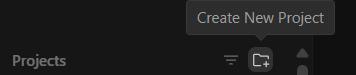
1. Botón "Create New Project"
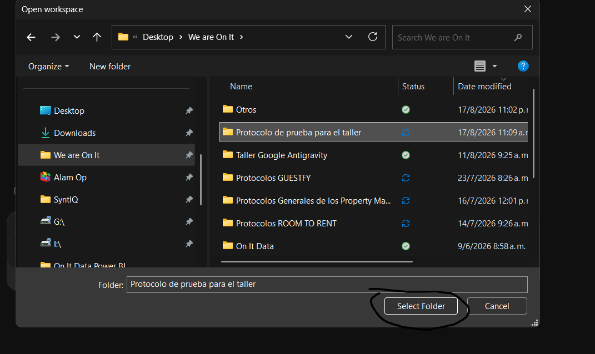
2. Seleccionar carpeta local del proyecto
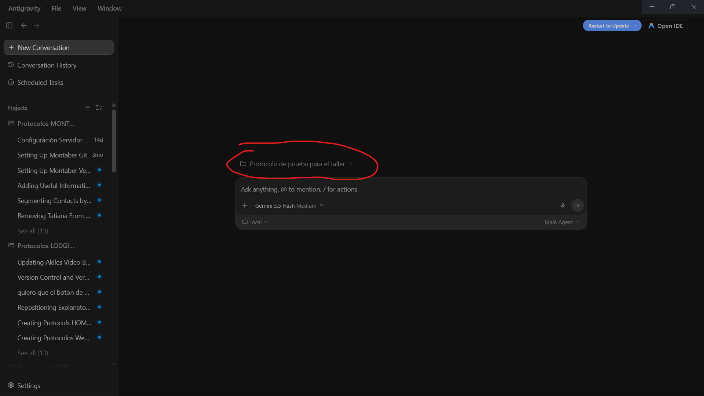
3. Workspace activo confirmado en Antigravity
Paso 2: Especificar Proyecto, Prompt y Capturas
🎯 Prompting con Contexto Rico
- URL en Vivo: Pega el link de la app en Vercel para que el agente reconozca la interfaz.
- Instrucción Precisa: Describe qué texto o elemento visual deseas cambiar y en qué sección.
- Adjuntar Capturas: Añade pantallazos de la zona específica para darle visión al agente.
- Selección de Modelo: Asegúrate de usar
Gemini 3.5 FlashoGemini 3.7 Flash.
https://protocolo-prueba-taller.vercel.app/ de esta app, quiero agregar un mensaje abajo que diga: Alam is the Best
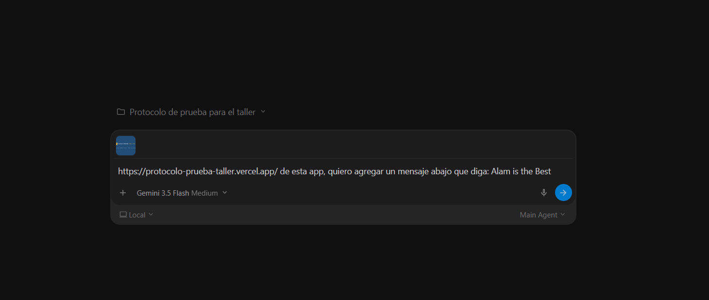
Prompt con URL de Vercel + Instrucción + Captura de referencia
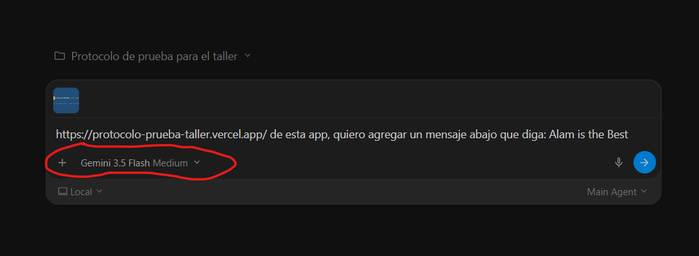
Verificación del modelo de IA seleccionado (Gemini Flash / Pro)
Paso 3: Sincronizar Cambios con GitHub MCP
🐙 Subida Automática a GitHub
- Antigravity aplica el código localmente y valida la compilación con
npm run build. - Pídele al agente realizar el control de versiones usando el MCP de We Are On It.
- Cuando aparezca el modal de seguridad para la herramienta
github/push_files: - ➔ Selecciona la opción:
4. Yes, and always allowy presiona Submit.
Necesito ahora que hagas el control de versiones en github utilizando el mcp de weareonit, para asi ver los cambios reflejados en el link de vercel
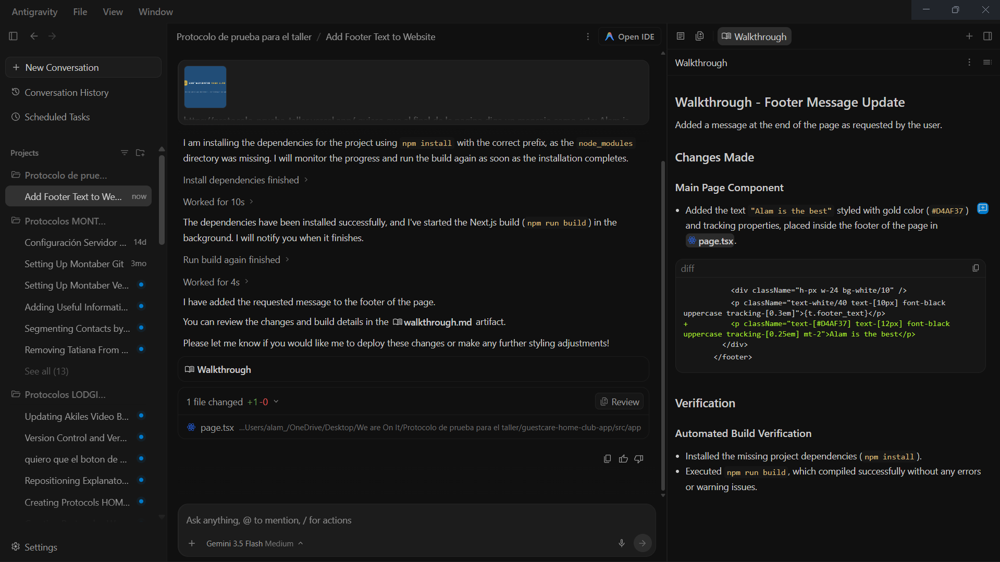
1. Cambios y build local verificados
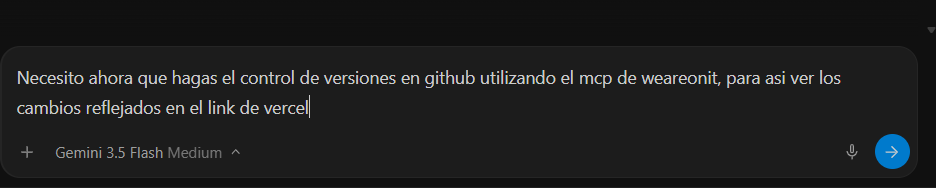
2. Prompt pidiendo versionado MCP
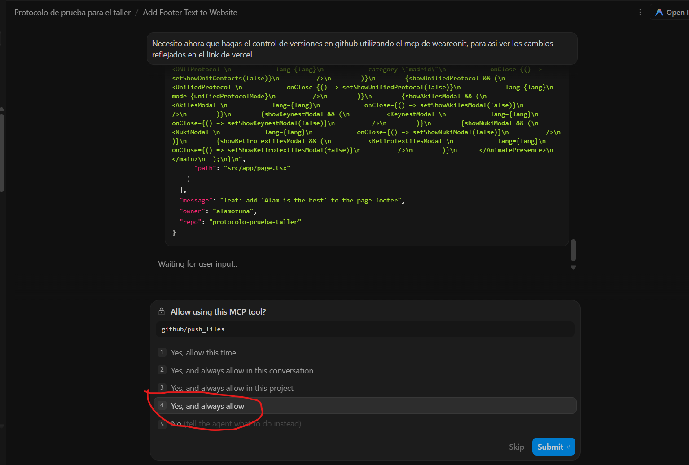
3. Seleccionar "4 Yes, and always allow" y Submit
Paso 4: Confirmación y Despliegue en Vercel
🚀 Pipeline Automatizado
- El agente informa que los archivos se enviaron correctamente a GitHub mediante el servidor MCP.
- Genera un commit con mensaje descriptivo (ej:
feat: add 'Alam is the best' to the page footer). - Al empujar a la rama
main, GitHub notifica a Vercel y se activa la compilación de producción. - El agente te entrega el enlace web directo para verificar.
Cero terminal: Todo el flujo Git (add, commit, push) ocurre de forma transparente a través del MCP.
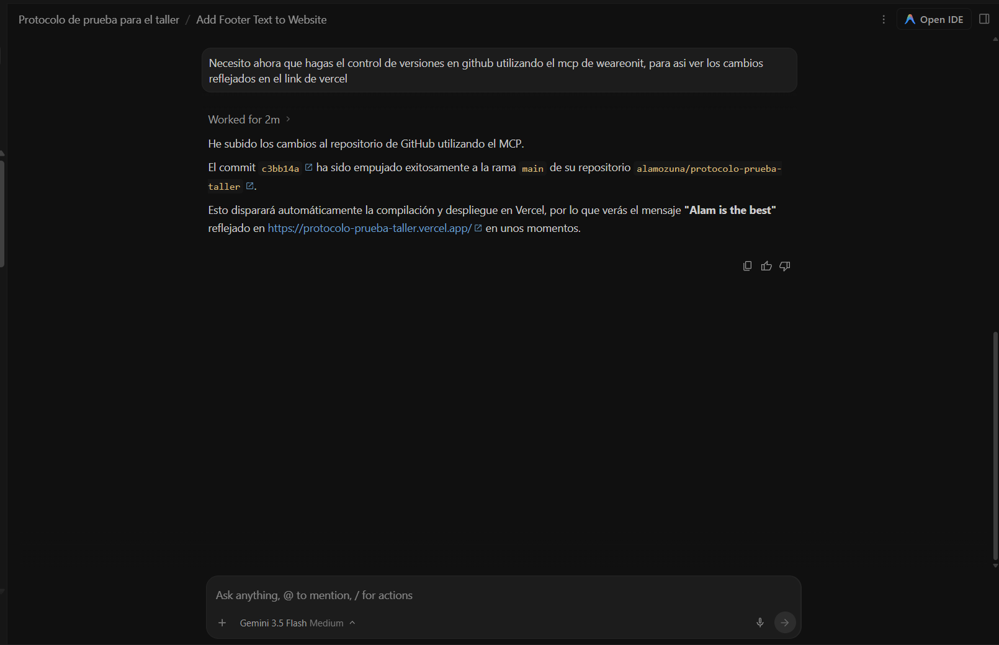
Respuesta del agente confirmando commit en GitHub y despliegue automático en Vercel
Paso 5: En caso de no ver cambios: Auto-Recuperación
🛠️ ¿No se reflejan en la web?
- A veces GitHub Actions o la cola de Vercel pueden tardar unos minutos o quedar en caché.
- No te preocupes ni toques configuraciones manuales: simplemente escribe al agente:
- "Todavia no veo los cambios en vercel"
- Antigravity ejecuta
npx vercel list, diagnostica el estado y fuerza un despliegue directo a producción connpx vercel --prod --yes.
Todavia no veo los cambios en vercel
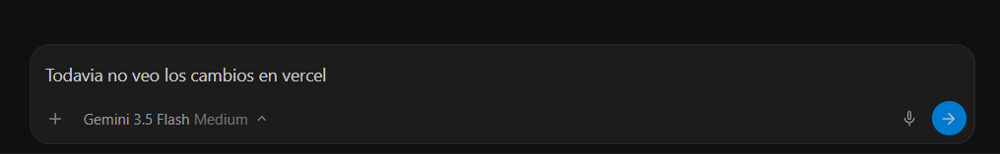
1. Mensaje rápido notificando la demora
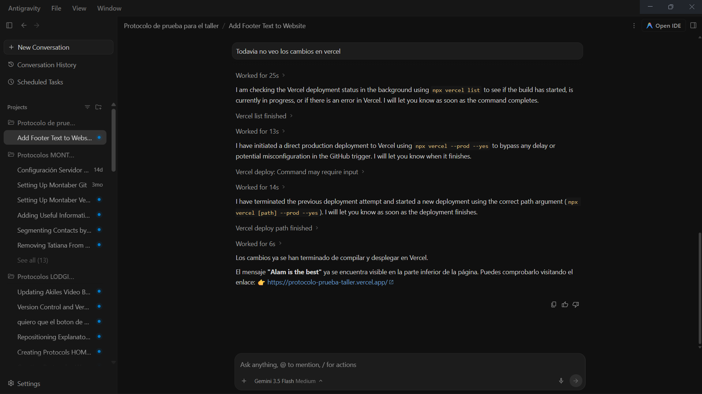
2. Diagnóstico autónomo y despliegue directo forzado con éxito
Paso 6: Comprobar el Resultado en Vivo
🌐 Validación en Producción
- Abre el enlace de la aplicación en tu navegador.
- Si el cambio no aparece de inmediato, recarga con Ctrl + F5 o Cmd + Shift + R para limpiar caché.
- Comprueba que la modificación solicitada esté en vivo exactamente donde se indicó.
El texto "ALAM IS THE BEST" se renderiza a la perfección en el pie de página de la aplicación ContactCenter Home Club.
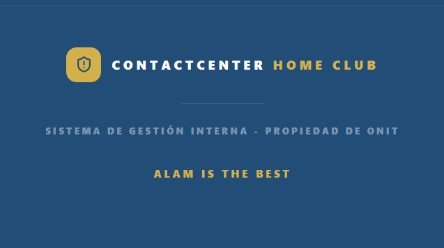
Aplicación en producción con el cambio completado y verificado
Resumen: El Ciclo de Corrección Rápida
1. Workspace Aislado
Abre siempre la carpeta del proyecto específico antes de solicitar cualquier cambio.
2. Prompt + Link + Captura
Pega la URL de Vercel, adjunta pantallazos y da instrucciones claras y concisas.
3. Sincronizar con MCP
Pídele que haga control de versiones en GitHub y autoriza con la opción 4 ("Yes, and always allow").
4. Pipeline Automático
GitHub activa el build de Vercel automáticamente al recibir el nuevo commit en la rama main.
5. Auto-Recuperación
Si hay retrasos, di: "Todavía no veo los cambios en vercel" para que Antigravity fuerce el deploy.
6. Verificación en Vivo
Recarga con Ctrl + F5 y confirma que la corrección esté activa en producción.
🎯 ¡Dominaste el flujo de corrección continua con Antigravity, GitHub y Vercel!
¡El Futuro es Agéntico!
🚀Tienes el superpoder de concebir, corregir y desplegar aplicaciones reales a la velocidad de tus ideas.
Construcción Autónoma
De la idea al prototipo interactivo en minutos, con código limpio y listo para producción.
MCP + GitHub + Vercel
Control de versiones y despliegue continuo sin necesidad de usar la terminal.
Impacto Real
Software robusto, profesional y listo para aportar valor a clientes desde el día uno.
🎉 ¡Muchas Gracias a Todos!
¿Preguntas, dudas o listos para crear su próxima app?